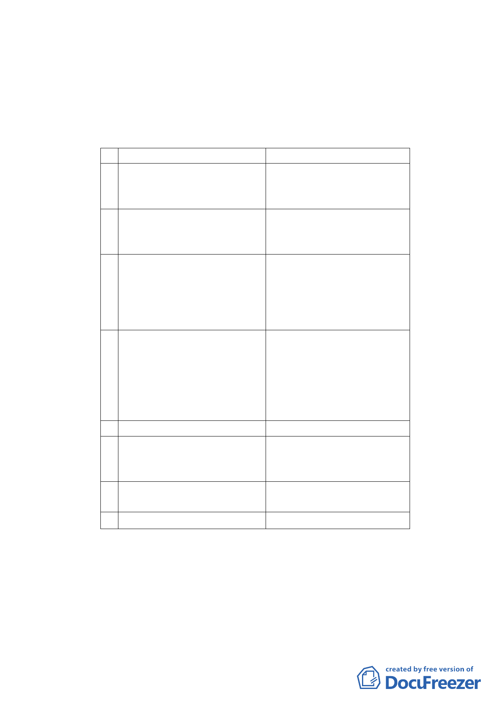

中詳列污水處理計畫及垃圾處理計畫。
（二） 擬訂細部計畫內容
1. 土地使用項目
休閒農業特定專用區之土地使用以形塑品茗及茶
藝文化為主，輔以因應休閒農業允許所衍生之飲食及
餐飲活動需求，允許土地及建築物使用組別如下：
1 第7組：醫療保健服務業 A 診所、藥局
2 第12組：公用事業設施
A 電信機房
B 自來水或下水道抽水站
C 其他公用事業設施
3 第17組：日常用品零售業 A 飲食成品
B 糧食
C 蔬果
4 第19組：一般零售業甲組 A 古玩、藝品
B 鮮花、禮品
C 茶葉及茶具
D 種子、園藝及其用品
E 瓷器、陶器、搪器
5 第21組：飲食業。本組限於 A 點心店
營業樓地板面積不超過
B 飲食店
150 平方公尺之下列各款： C 泡沫紅茶店
D 餐廳（館）
E 咖啡館
F 茶藝館
6 第22組：餐飲業（不含酒店）
7 第49組：農藝及園藝業
A 農作物種植物
B 花圃、溫室、苗圃及果園
C 造林
8 第50組：農業及農業建築 A 農業倉庫及農舍
B 休閒農業之相關設施
9 第51組：公害最輕微之工業 A 製茶業
2. 土地使用強度
（1） 本計畫區內之建蔽率不得超過15%，其中主建物建蔽
率不得超過10%，涼亭部分不得超過5%，涼亭部分之
興建應符合「臺北市山坡地開發建築要點」及水土
保持相關規定辦理。
（2） 本案基地中主建物建築面積合計不得超過165平方
-7-